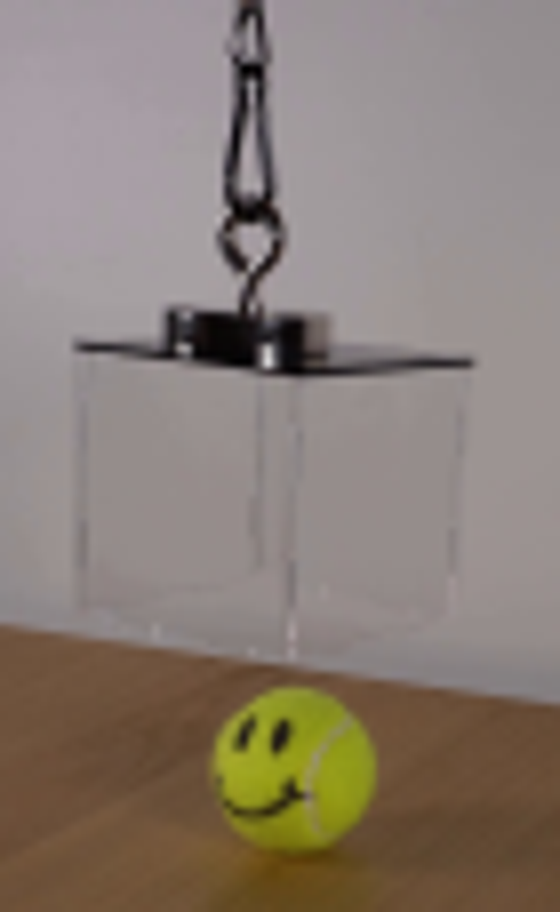
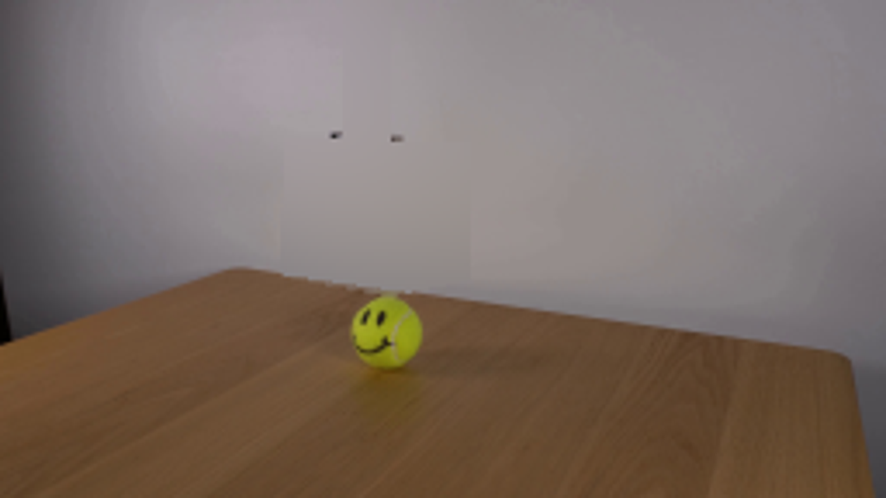
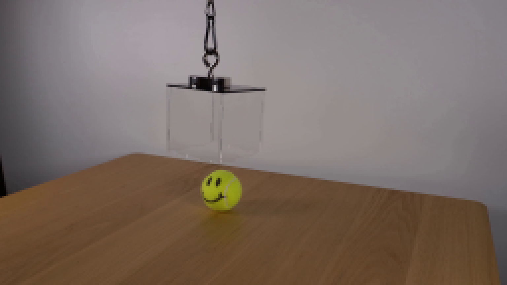
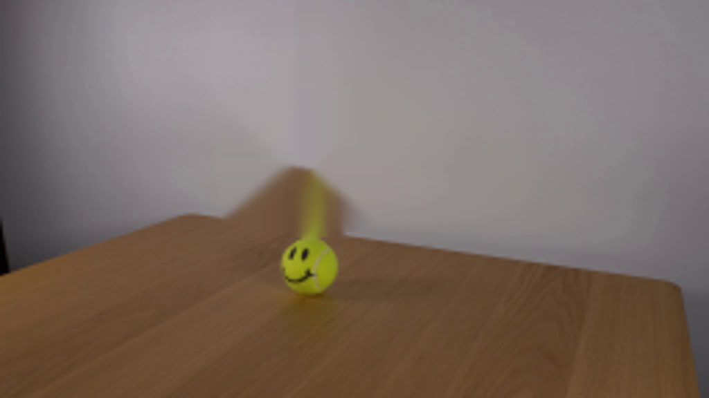
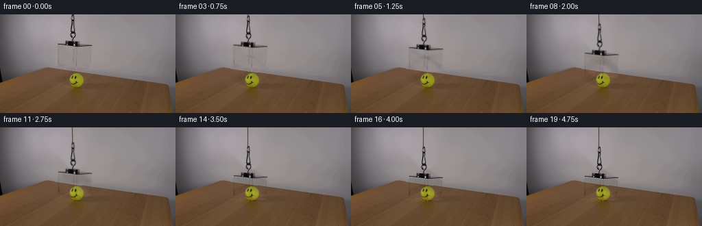
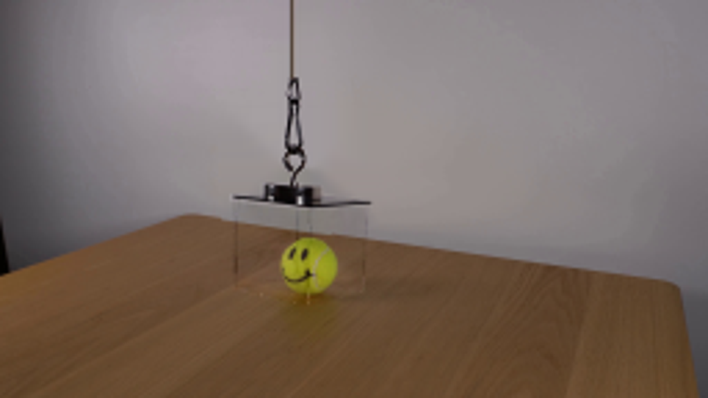

CODING AGENTS AS PIXEL WORLD MODELS
traex/GPT-6.1-Sol · 0099
点击播放 · 原生 RGB 像素
逐轮保存的候选
回放视频、检查图与代码变化。
每份候选均可单独播放。实际图片检查记录在下方工具轨迹中。
候选 01播放与检查图
点击播放 · 原生 RGB 像素

展开代码变化
--- 上一保存版本
+++ 本次保存版本
@@ -0,0 +1,108 @@
+from pathlib import Path
+import numpy as np
+from PIL import Image, ImageDraw, ImageFilter
+import cv2
+from scipy.ndimage import gaussian_filter
+import artifact_io
+
+ROOT=Path(__file__).resolve().parent
+
+def polygon_mask(points, scale=4):
+ im=Image.new('L',(256*scale,144*scale))
+ ImageDraw.Draw(im).polygon([(round(x*scale),round(y*scale)) for x,y in points],fill=255)
+ return np.asarray(im.resize((256,144),Image.Resampling.LANCZOS),dtype=float)/255
+
+def generate():
+ src=np.asarray(Image.open(ROOT/'first_frame.png').convert('RGB'),dtype=float)
+ h,w=src.shape[:2]; yy,xx=np.mgrid[:h,:w]
+ # Recover the wall concealed by the transparent enclosure and suspension.
+ remove=np.zeros((h,w),np.uint8)
+ cv2.rectangle(remove,(100,0),(112,40),255,-1)
+ cv2.fillPoly(remove,[np.array([[80,37],[137,37],[137,80],[112,85],[80,79]],np.int32)],255)
+ edge=77.3+(xx-68)*.144
+ X=(xx-106)/60.; Y=(yy-42)/60.
+ A=np.stack([np.ones_like(X),X,Y,X*Y,X**2,Y**2,X**3,X**2*Y,X*Y**2,Y**3],-1)
+ select=(xx>54)&(xx<165)&(yy<edge-3)&(remove==0)
+ coeff=np.linalg.lstsq(A[select],src[select],rcond=None)[0]
+ wall=A@coeff
+ # A wall-only harmonic fill avoids spreading the tabletop or ball upward.
+ tmp=src.copy(); tmp[yy>=edge-1]=wall[yy>=edge-1]
+ wallfill=cv2.inpaint(np.uint8(np.clip(tmp,0,255)),remove,4,cv2.INPAINT_NS).astype(float)
+ bg=src.copy()
+ blend=cv2.GaussianBlur(remove.astype(float)/255,(0,0),.55)
+ # Keep all untouched background exactly fixed.
+ blend[remove==0]=0
+ board=src.copy()
+ for y in range(76,87):
+ for x in range(79,138):
+ if remove[y,x] and y>=edge[y,x]-1.2:
+ depth=y-edge[y,x]
+ # Same depth below the straight far edge on either side.
+ samples=[]
+ for sx in [76,77,78,139,140,141]:
+ sy=77.3+(sx-68)*.144+depth
+ val=cv2.getRectSubPix(src.astype(np.float32),(1,1),(float(sx),float(sy)))[0,0]
+ samples.append(val)
+ f=(x-77)/(140-77)
+ board[y,x]=(1-f)*np.mean(samples[:3],axis=0)+f*np.mean(samples[3:],axis=0)
+ # Smooth edge antialiasing in the tiny uncovered table strip.
+ mix=np.clip((yy-edge+.5)/1.15,0,1)[...,None]
+ recovered=wallfill*(1-mix)+board*mix
+ bg=bg*(1-blend[...,None])+recovered*blend[...,None]
+
+ # Digitize the existing transparent acrylic and its original metal hanger.
+ face=polygon_mask([(84.0,43.3),(110.5,46.0),(133.0,45.4),(131.5,77.8),(111.0,82.8),(83.7,77.0)])
+ # Opacity of the top fixture follows its silhouette; its bright glints are retained.
+ opaque=polygon_mask([(83.0,42.0),(94.8,41.7),(94.8,38.0),(109.0,38.0),(109.5,39.0),(116.5,39.0),(117.0,42.3),(134.5,44.5),(134.5,46.6),(109.5,47.4),(83.0,44.8)])
+ chain=polygon_mask([(102.7,0),(108.5,0),(109,9),(107.7,14),(110.6,26),(111,32),(106.7,36.4),(107.8,40.7),(102.3,40.7),(103.8,35.1),(100.7,31.7),(101.5,27),(103.0,23),(103.8,9),(102.7,7)])
+ opaque=np.maximum(opaque, chain)
+ # Chain has holes: recover alpha according to contrast to the wall.
+ is_chain=(yy<38)&(chain>0)
+ contrast=np.mean(bg-src,axis=2)
+ opaque[is_chain]*=np.clip((contrast[is_chain]-1)/42,0,1)
+ # Model clear panes as a weak transmission and additive specular detail.
+ glass=face*(1-opaque)
+ transmission=1-.052*glass
+ residual=(src-bg*transmission[...,None])
+ glassdetail=residual*glass[...,None]
+ # Pixels at the original table edge are not physical marks on acrylic.
+ glassdetail[(yy>=edge-.5)&(yy>78)] = 0
+ # Keep only original pane details; a narrow rim remains reflective.
+ object_mask=np.maximum(face,opaque)
+ rgb=src.copy()
+ frames=[src.astype(np.uint8)]
+ for i in range(1,20):
+ t=i/4
+ # Smooth, deliberate lowering at a constant rate, gently reaching the table.
+ u=np.clip((t-.25)/3.6,0,1)
+ p=u*u*(3-2*u)
+ dy=28.0*p
+ dx=.28*np.sin(np.pi*p)
+ M=np.array([[1,0,dx],[0,1,dy]],np.float32)
+ warp=lambda a: cv2.warpAffine(a.astype(np.float32),M,(w,h),flags=cv2.INTER_LINEAR,borderMode=cv2.BORDER_CONSTANT,borderValue=0)
+ out=bg.copy()
+ # A slight, soft transparent enclosure shadow forms close to the surface.
+ sh=np.exp(-(((xx-111)/23)**2+((yy-106)/7.5)**2)*1.7)
+ out*=1-(.055*p**3*sh[...,None])
+ g=warp(glass)
+ out=out*(1-.052*g[...,None])+warp(glassdetail)
+ a=warp(opaque)
+ prem=warp(src*opaque[...,None])
+ out=out*(1-a[...,None])+prem
+ # The continuing support stays taut while the lower fittings descend.
+ S=4
+ cord=Image.new('RGBA',(w*S,h*S),(0,0,0,0)); d=ImageDraw.Draw(cord)
+ end=dy+.5
+ d.line([(105.4*S,-2*S),((105.4+dx)*S,end*S)],fill=(44,35,25,220),width=4)
+ d.line([(105.85*S,-2*S),((105.85+dx)*S,end*S)],fill=(113,76,40,150),width=2)
+ ca=np.asarray(cord.resize((w,h),Image.Resampling.LANCZOS),dtype=float)/255
+ # Restrict the extension to the new region above the original chain.
+ cordmask=np.clip(dy-yy+.2,0,1)*np.clip(dy/1.5,0,1)
+ aa=ca[...,3]*cordmask
+ out=out*(1-aa[...,None])+ca[...,:3]*255*aa[...,None]
+ frames.append(np.uint8(np.clip(out,0,255)))
+ return np.stack(frames)
+
+if __name__=='__main__':
+ frames=generate()
+ artifact_io.save(frames,ROOT)
候选 02播放与检查图
点击播放 · 原生 RGB 像素

展开代码变化
--- 上一保存版本
+++ 本次保存版本
@@ -1,8 +1,7 @@
from pathlib import Path
import numpy as np
-from PIL import Image, ImageDraw, ImageFilter
+from PIL import Image, ImageDraw
import cv2
-from scipy.ndimage import gaussian_filter
import artifact_io
ROOT=Path(__file__).resolve().parent
@@ -73,6 +72,9 @@
frames=[src.astype(np.uint8)]
for i in range(1,20):
t=i/4
+ if i == 1:
+ frames.append(src.astype(np.uint8))
+ continue
# Smooth, deliberate lowering at a constant rate, gently reaching the table.
u=np.clip((t-.25)/3.6,0,1)
p=u*u*(3-2*u)
@@ -93,8 +95,8 @@
S=4
cord=Image.new('RGBA',(w*S,h*S),(0,0,0,0)); d=ImageDraw.Draw(cord)
end=dy+.5
- d.line([(105.4*S,-2*S),((105.4+dx)*S,end*S)],fill=(44,35,25,220),width=4)
- d.line([(105.85*S,-2*S),((105.85+dx)*S,end*S)],fill=(113,76,40,150),width=2)
+ d.line([(105.4*S,-2*S),((105.4+dx)*S,end*S)],fill=(117, 67,24,230),width=4)
+ d.line([(105.85*S,-2*S),((105.85+dx)*S,end*S)],fill=(180,102,40,165),width=2)
ca=np.asarray(cord.resize((w,h),Image.Resampling.LANCZOS),dtype=float)/255
# Restrict the extension to the new region above the original chain.
cordmask=np.clip(dy-yy+.2,0,1)*np.clip(dy/1.5,0,1)
候选 03播放与检查图
可观测工具轨迹
实际执行的命令与返回图片。
命令 1exit 0
/bin/bash -lc 'ls -la && cat prompt.txt && cat GENERATION_RULES.md'
命令 2exit 0
/bin/bash -lc "cat artifact_io.py && python - <<'PY'
from PIL import Image
im=Image.open('first_frame.png'); print(im.size); im.resize((1024,576)).save('.tmp/upscaled.png')
PY"命令 3exit 0
/bin/bash -lc "python - <<'PY'
from PIL import Image
im=Image.open('first_frame.png'); im.crop((75,0,145,114)).resize((560,912)).save('.tmp/crop.png')
PY"命令 4exit 0
/bin/bash -lc "python - <<'PY'
import cv2,scipy,numpy,PIL
print('cv',cv2.__version__)
PY"命令 5exit 0
/bin/bash -lc "python - <<'PY'
from PIL import Image
im=Image.open('first_frame.png'); im.resize((1536,864),Image.Resampling.NEAREST).save('.tmp/nearest.png')
PY"命令 6exit 0
/bin/bash -lc "cat > .tmp/explore.py <<'PY'
import cv2,numpy as np
from PIL import Image,ImageDraw
src=np.array(Image.open('first_frame.png')).astype(float)
h,w=src.shape[:2]; y,x=np.mgrid[:h,:w]
m=np.zeros((h,w),np.uint8)
cv2.fillPoly(m,[np.array([[82,40],[135,41],[135,80],[112,85],[81,79]],np.int32)],255)
cv2.rectangle(m,(99,0),(112,41),255,-1)
terms=lambda xx,yy: np.stack([np.ones_like(xx),xx,yy,xx*yy,xx**2,yy**2,xx**3,xx**2*yy,xx*yy**2,yy**3],-1)
xx=(x-106)/50; yy=(y-43)/50
fit=(x>58)&(x<163)&(y<88)&(y<77+(x-68)*.144-1)&(m==0)
A=terms(xx,yy)
coef=np.linalg.lstsq(A[fit],src[fit],rcond=None)[0]
wall=A@coef
bg=src.copy(); bg[m>0]=wall[m>0]
# preserve reconstructed wooden table intersection at very bottom, tiny triangle
masktable=((m>0)&(y>=77+(x-68)*.144)).astype(np.uint8)*255
inp=cv2.inpaint(src.astype(np.uint8),masktable,3,cv2.INPAINT_TELEA)
bg[masktable>0]=inp[masktable>0]
Image.fromarray(np.uint8(np.clip(bg,0,255))).save('.tmp/bg.png')
Image.fromarray(np.uint8(np.clip(bg,0,255))).resize((1024,576)).save('.tmp/bgup.png')
res=src-bg
Image.fromarray(np.uint8(np.clip(128+res*3,0,255))).resize((1024,576)).save('.tmp/res.png')
np.savez('.tmp/extract.npz',bg=bg,res=res,mask=m)
PY
python .tmp/explore.py"命令 7exit 0
/bin/bash -lc "cat > .tmp/testbg.py <<'PY'
import cv2,numpy as np
from PIL import Image
src=np.array(Image.open('first_frame.png'))
m=np.zeros((144,256),np.uint8)
cv2.fillPoly(m,[np.array([[80,37],[137,37],[136,81],[113,86],[80,79]],np.int32)],255)
cv2.rectangle(m,(100,0),(112,40),255,-1)
for name,mode in [('telea',cv2.INPAINT_TELEA),('ns',cv2.INPAINT_NS)]:
im=cv2.inpaint(src,m,4,mode)
Image.fromarray(im).resize((1024,576)).save('.tmp/bg_'+name+'.png')
PY
python .tmp/testbg.py"命令 8exit 0
/bin/bash -lc "cat > generate.py <<'PY'
from pathlib import Path
import numpy as np
from PIL import Image, ImageDraw, ImageFilter
import cv2
from scipy.ndimage import gaussian_filter
import artifact_io
ROOT=Path(__file__).resolve().parent
def polygon_mask(points, scale=4):
im=Image.new('L',(256*scale,144*scale))
ImageDraw.Draw(im).polygon([(round(x*scale),round(y*scale)) for x,y in points],fill=255)
return np.asarray(im.resize((256,144),Image.Resampling.LANCZOS),dtype=float)/255
def generate():
src=np.asarray(Image.open(ROOT/'first_frame.png').convert('RGB'),dtype=float)
h,w=src.shape[:2]; yy,xx=np.mgrid[:h,:w]
# Recover the wall concealed by the transparent enclosure and suspension.
remove=np.zeros((h,w),np.uint8)
cv2.rectangle(remove,(100,0),(112,40),255,-1)
cv2.fillPoly(remove,[np.array([[80,37],[137,37],[137,80],[112,85],[80,79]],np.int32)],255)
edge=77.3+(xx-68)*.144
X=(xx-106)/60.; Y=(yy-42)/60.
A=np.stack([np.ones_like(X),X,Y,X*Y,X**2,Y**2,X**3,X**2*Y,X*Y**2,Y**3],-1)
select=(xx>54)&(xx<165)&(yy<edge-3)&(remove==0)
coeff=np.linalg.lstsq(A[select],src[select],rcond=None)[0]
wall=A@coeff
# A wall-only harmonic fill avoids spreading the tabletop or ball upward.
tmp=src.copy(); tmp[yy>=edge-1]=wall[yy>=edge-1]
wallfill=cv2.inpaint(np.uint8(np.clip(tmp,0,255)),remove,4,cv2.INPAINT_NS).astype(float)
bg=src.copy()
blend=cv2.GaussianBlur(remove.astype(float)/255,(0,0),.55)
# Keep all untouched background exactly fixed.
blend[remove==0]=0
board=src.copy()
for y in range(76,87):
for x in range(79,138):
if remove[y,x] and y>=edge[y,x]-1.2:
depth=y-edge[y,x]
# Same depth below the straight far edge on either side.
samples=[]
for sx in [76,77,78,139,140,141]:
sy=77.3+(sx-68)*.144+depth
val=cv2.getRectSubPix(src.astype(np.float32),(1,1),(float(sx),float(sy)))[0,0]
samples.append(val)
f=(x-77)/(140-77)
board[y,x]=(1-f)*np.mean(samples[:3],axis=0)+f*np.mean(samples[3:],axis=0)
# Smooth edge antialiasing in the tiny uncovered table strip.
mix=np.clip((yy-edge+.5)/1.15,0,1)[...,None]
recovered=wallfill*(1-mix)+board*mix
bg=bg*(1-blend[...,None])+recovered*blend[...,None]
# Digitize the existing transparent acrylic and its original metal hanger.
face=polygon_mask([(84.0,43.3),(110.5,46.0),(133.0,45.4),(131.5,77.8),(111.0,82.8),(83.7,77.0)])
# Opacity of the top fixture follows its silhouette; its bright glints are retained.
opaque=polygon_mask([(83.0,42.0),(94.8,41.7),(94.8,38.0),(109.0,38.0),(109.5,39.0),(116.5,39.0),(117.0,42.3),(134.5,44.5),(134.5,46.6),(109.5,47.4),(83.0,44.8)])
chain=polygon_mask([(102.7,0),(108.5,0),(109,9),(107.7,14),(110.6,26),(111,32),(106.7,36.4),(107.8,40.7),(102.3,40.7),(103.8,35.1),(100.7,31.7),(101.5,27),(103.0,23),(103.8,9),(102.7,7)])
opaque=np.maximum(opaque, chain)
# Chain has holes: recover alpha according to contrast to the wall.
is_chain=(yy<38)&(chain>0)
contrast=np.mean(bg-src,axis=2)
opaque[is_chain]*=np.clip((contrast[is_chain]-1)/42,0,1)
# Model clear panes as a weak transmission and additive specular detail.
glass=face*(1-opaque)
transmission=1-.052*glass
residual=(src-bg*transmission[...,None])
glassdetail=residual*glass[...,None]
# Pixels at the original table edge are not physical marks on acrylic.
glassdetail[(yy>=edge-.5)&(yy>78)] = 0
# Keep only original pane details; a narrow rim remains reflective.
object_mask=np.maximum(face,opaque)
rgb=src.copy()
frames=[src.astype(np.uint8)]
for i in range(1,20):
t=i/4
# Smooth, deliberate lowering at a constant rate, gently reaching the table.
u=np.clip((t-.25)/3.6,0,1)
p=u*u*(3-2*u)
dy=28.0*p
dx=.28*np.sin(np.pi*p)
M=np.array([[1,0,dx],[0,1,dy]],np.float32)
warp=lambda a: cv2.warpAffine(a.astype(np.float32),M,(w,h),flags=cv2.INTER_LINEAR,borderMode=cv2.BORDER_CONSTANT,borderValue=0)
out=bg.copy()
# A slight, soft transparent enclosure shadow forms close to the surface.
sh=np.exp(-(((xx-111)/23)**2+((yy-106)/7.5)**2)*1.7)
out*=1-(.055*p**3*sh[...,None])
g=warp(glass)
out=out*(1-.052*g[...,None])+warp(glassdetail)
a=warp(opaque)
prem=warp(src*opaque[...,None])
out=out*(1-a[...,None])+prem
# The continuing support stays taut while the lower fittings descend.
S=4
cord=Image.new('RGBA',(w*S,h*S),(0,0,0,0)); d=ImageDraw.Draw(cord)
end=dy+.5
d.line([(105.4*S,-2*S),((105.4+dx)*S,end*S)],fill=(44,35,25,220),width=4)
d.line([(105.85*S,-2*S),((105.85+dx)*S,end*S)],fill=(113,76,40,150),width=2)
ca=np.asarray(cord.resize((w,h),Image.Resampling.LANCZOS),dtype=float)/255
# Restrict the extension to the new region above the original chain.
cordmask=np.clip(dy-yy+.2,0,1)*np.clip(dy/1.5,0,1)
aa=ca[...,3]*cordmask
out=out*(1-aa[...,None])+ca[...,:3]*255*aa[...,None]
frames.append(np.uint8(np.clip(out,0,255)))
return np.stack(frames)
if __name__=='__main__':
frames=generate()
artifact_io.save(frames,ROOT)
PY
python generate.py"命令 9exit 0
/bin/bash -lc "python - <<'PY'
from PIL import Image
for i in [1,8,19]: Image.open('frames/%02d.png'%i).resize((1024,576)).save('.tmp/frame%02d.png'%i)
PY"命令 10exit 0
/bin/bash -lc "python - <<'PY'
p='generate.py'
s=open(p).read().replace('from PIL import Image, ImageDraw, ImageFilter','from PIL import Image, ImageDraw').replace('from scipy.ndimage import gaussian_filter\\n','').replace(\" t=i/4\\n\", \" t=i/4\\n if i == 1:\\n frames.append(src.astype(np.uint8))\\n continue\\n\").replace('fill=(44,35,25,220)','fill=(117, sixtyseven,24,230)'.replace('sixtyseven','67')).replace('fill=(113,76,40,150)','fill=(180,102,40,165)')
open(p,'w').write(s)
PY
python generate.py
python - <<'PY'
import numpy as np
from PIL import Image
z=np.load('pixels.npz')['pixels']; im=np.array(Image.open('first_frame.png')).astype(np.uint32); p=(im[:,:,0]<<16)|(im[:,:,1]<<8)|im[:,:,2]
print(z.shape, 'exact first', np.array_equal(z[:,:,0],p))
PY
which ffmpeg || true"视觉工具实际返回图片 1

视觉工具实际返回图片 2

视觉工具实际返回图片 3

视觉工具实际返回图片 4

视觉工具实际返回图片 5

视觉工具实际返回图片 6

视觉工具实际返回图片 7

视觉工具实际返回图片 8
保存候选 3 份；完成命令 10 次；可验证图片返回 8 张。原始 API 响应与完整日志保留在本地。